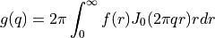

xopto.util.hankel module¶
- continuous(frequency: numpy.ndarray, rfun: numpy.ndarray, rstop: float, out: Optional[numpy.ndarray] = None, **kwargs) → numpy.ndarray[source]¶
Computes Hankel transform of a continuous radially symmetric function:

- Parameters
frequency (np.ndarray) – A list of frequencies (1/m) at which to compute the Hankel transform.
rfun (callable) – Callable with one parameter (radius) representing a radially symmetric function.
rstop (float) – Range of numerical integration as [0, rstop].
out (np.ndarray) – Optional output array for the computed frequencies.
kwargs (dict) – Optional keyword arguments passed to the
scipy.integrate.quad()function.
- Returns
F – The Hankel transfor of rfun at the given frequencies.
- Return type
np.ndarray vector
- discrete(frequency: numpy.ndarray, rpts: numpy.ndarray, fpts: numpy.ndarray, logscale: bool = True, **kwargs) → numpy.ndarray[source]¶
Computes Hankel transform of a discrete function. The discrete function is first made continuous by means of interpolation in linear or log scale. Finally, the transform is computed by the
continuous()function using quad.- Parameters
frequency (np.ndarray) – A list of frequencies (1/m) at which to compute the Hankel transform.
rpts (np.ndarray) – Points at which the discrete radially symmetric function is defined.
fpts (np.ndarray) – Value of the radially symmetric function at points rpts.
kwargs (dict) – Optional keyword arguments passed to the
scipy.integrate.quad()function.
- Returns
F – The Hankel transfor of rfun at the given frequencies.
- Return type
np.ndarray
- discrete_simpson(frequency: numpy.ndarray, rpts: numpy.ndarray, fpts: numpy.ndarray, uneven: Optional[bool] = None) → numpy.ndarray[source]¶
Computes Hankel transform of a radially symmetric function defined on a grid of evenly or unevenly spaced points. To compute transforms of multiple sets (functions), the fpts array shape must be (num_sets, rpts.size).
- Parameters
frequency (np.ndarray) – A list of frequencies (1/m) at which to compute the Hankel transform.
rpts (np.ndarray) – A vector of evenly or unevenly spaced points at which the function values in fpts are defined.
fpts (np.ndarray) – A vector or array of function values defined at points rpts. To compute transforms of multiple sets (functions), the fpts array shape must be (num_sets, rpts.size).
uneven (bool) – If True, the method assumes unevenly spaced values in rpts. Default is False. If set to None, the value of uneven flag is derived from the values in the rpts array.
- Returns
F – The Hankel transfor of rfun at the given frequencies. If the fpts array ia a vector (points of one function only) then F is a vector of size len(frequencies). If fpts is a 2D array of shape (N, rpts.size) then F is a 2D array of shape (N, len(frequencies)).
- Return type
np.ndarray